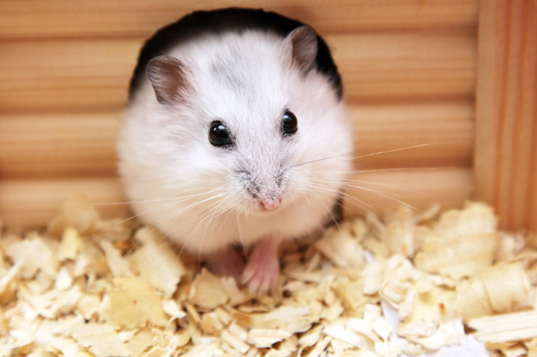
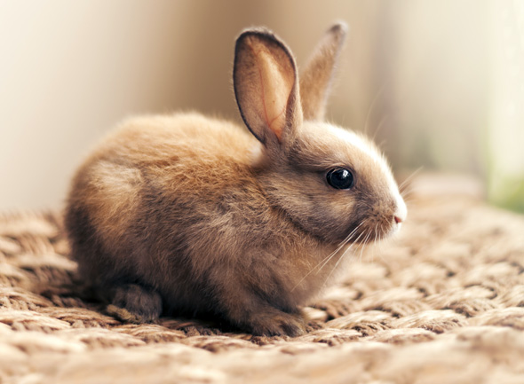

Szczury
Sczury domowe (Mus musculus) to najczęściej spotykane na całym świecie gryzonie. Są bardzo powszechne w domach i budynkach użyteczności publicznej, gdzie znajduje się wystarczająco dużo pożywienia i schronienia. Sczury są małe (zwykle mniej niż 6 cm długości) i są czarno-brązowe. Potrafią skakać, biegać i pływać, a także są bardzo dobrze przystosowane do życia w ciasnych przestrzeniach. Sczury są zwykle nocnymi zwierzętami, ale mogą pojawiać się w dzień w poszukiwaniu pożywienia. Są bardzo higieniczne i starają się wybierać świeże i suchsze miejsca do życia. Mogą być nosicielami wielu chorób i pasożytów, dlatego należy zachować ostrożność przy ich obecności.
Chomiki

Chomiki są małymi gryzoni, należącymi do rodziny chomikowatych. Większość gatunków chomików pochodzi z rodziny Cricetidae. Chomiki mają krótki, bocznie spłaszczony tułów i szerokie uszy. Większość gatunków chomików ma długie ogony, które są pokryte futrem i służą do równowagi. Chomiki są z reguły nocnymi zwierzętami i zwykle żyją w kolonii. Żywią się głównie ziarnami, owocami i warzywami, ale mogą też jeść małe owady. Niektóre gatunki chomików są hodowane jako zwierzęta domowe.
Króliki

Ż
Króliki domowe są rodziną szczurów, a ich bliskim krewnym jest zając. Są to zwierzęta towarzyszące, które najczęściej trzyma się w domach. Żyją od 5 do 10 lat, są bardzo inteligentne i lubią być w towarzystwie innych królików. Uwielbiają siedzieć w wygodnym domu i podejmować przyjemne aktywności, takie jak bieganie, skakanie i wspinanie się. Trzymanie królika domowego wymaga regularnego czesania, odrobaczania i karmienia. Króliki domowe mogą być bardzo dobrymi zwierzętami towarzyszącymi dla dzieci i dorosłych.